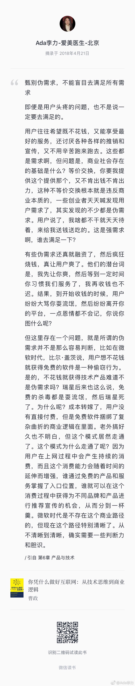
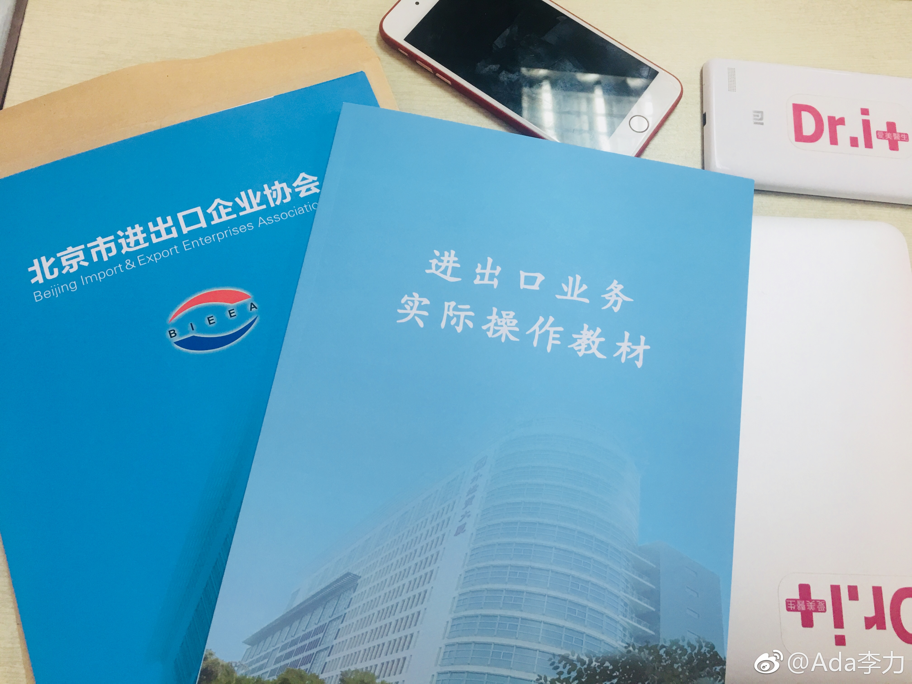
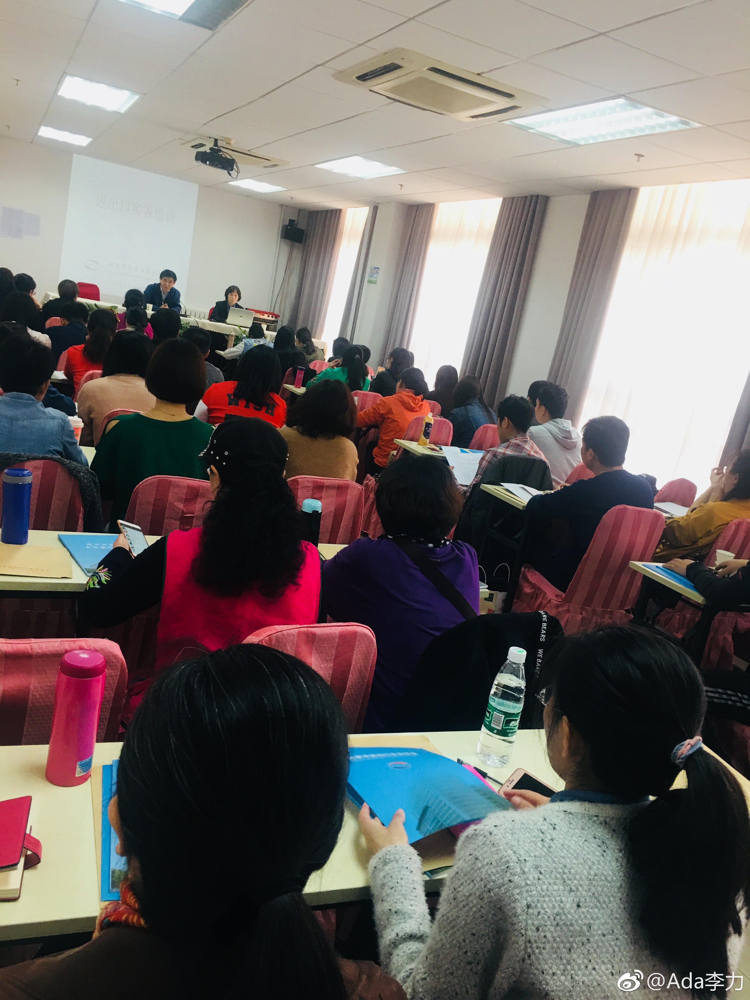

#读书# 用户伪需求这段话再看一遍，依然收获很大。是否能甄别用户的伪需求，真需求，强需求是创始人的宿命开始。即使看准了需求也只是踩准了第一步，接下来是自己是否有能力更高效地满足用户需求。能力配不上野心，依然会死。 
爱美商城推出的用户使用活动，产品搭配方案等，很快被同行抄去，这些方面继续抠细节是浪费时间，要做的事情是加快频率和用户运营提升粘性和复购。至于促销方案，我们经常抄其它各大电商平台，这都算不算需要抠的细节。@Ada李力:#读书#细节也有区分。不过对我来说，先得能做到抠细节。区分哪些细节重要，哪些细节不重要的能力，也是要靠经验积累。
每隔几个月，我都要买几个同样的充电线。这东西易耗是一个原因，另外一个原因是通过冗余提升效率或体验，比如，我会在所有玩手机的附近都配上手机充电线- 卧室床头- 家里书桌旁- 餐厅- 汽车里- 旅行包的充电宝+充电线- 公司办公桌大概就差厕所没配线了，因为不健康，坚决不配。时不时要找手机已经是个麻烦事儿，就别再加上找充电线的事儿啦。
上下班走路途中有时会听书，但测试几次下来后，发现听书的效率太低了。比如《假如给我三天光明》这本书，路上四次听，加起来也应该有三个小时了，只完成了不到一半，而且中间还经常走神。周末读电子书，不到一小时就读完了剩下的半本。记得有个研究说每个人在吸收知识时的方式有很大差异，有的是通过听觉，有的是通过视觉，有的是通过触觉，有的是通过操练等。看起来通过听觉吸收知识的方式，不适合我啦。
#创业#北京公司办理了进出口权，于是收到北京进出口企业协会的免费培训通知。分两次，一次是两天的业务培训，一次是两天的会计培训。依我对京城的了解，这种免费培训商业化意味不浓，会有不少干货。协会会长说最近几月北京每月新增几百家从事进出口业务的公司，而这个公司基数也就2万左右，协会加盟会员也就几千个，我有些怀疑这个新增数字。后来有中行朋友说是外汇受阻一种新的往外转移资金的方式。最想了解的跨境电商并没有内容。这个培训的还是最传统的进出口贸易商方面的业务，最适合的培训对象是报关员。